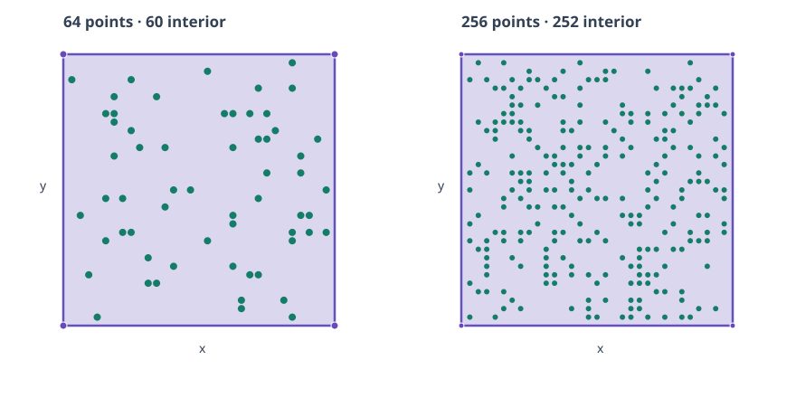

Verdict: per-attempt hull validity is reported; performance comparison inconclusive. All 60 measured attempts passed the independent exact 2D hull check. LP reducer status and retained-point counts are reported separately from hull validity. This report separates hull validity from ReductionStatus completion.

Every measured attempt is retained, including failures. All 60 measured attempts passed the independent exact 2D hull check. The table reports ReductionStatus completion for LP reducers; QuickHull has no such status and is marked n/a. Status completion means candidate calls completed and were correctly bound, not that retained points are exactly the extreme vertices. Latency and LP-call summaries are shown only when at least 5 measured attempts are present and every attempt passed; unqualified groups retain their raw outcomes; the measured interval excludes workspace creation and output validation.
| Fixture | Method | Hull valid | Timing summary | Reducer status complete | Retained points | Median (ms) | Range (ms) | LP calls, median |
|---|---|---|---|---|---|---|---|---|
| dyadic-square-n256 | A43-certificate-safe-basis-adaptation | 5/5 | qualified (5 complete attempts) | 0/5 | 123 | 25.306 | 25.130–25.618 | 125 |
| dyadic-square-n256 | A44-incremental-LP-farthest-seed | 5/5 | qualified (5 complete attempts) | 5/5 | 4 | 28.176 | 28.083–28.829 | 257 |
| dyadic-square-n256 | basis-reuse-related-to-A43 | 5/5 | qualified (5 complete attempts) | 5/5 | 125 | 0.756 | 0.751–0.784 | 0 |
| dyadic-square-n256 | geometric-quickhull | 5/5 | qualified (5 complete attempts) | n/a (no ReductionStatus) | 4 | 0.572 | 0.553–0.575 | 0 |
| dyadic-square-n256 | lp-membership-baseline | 5/5 | qualified (5 complete attempts) | 0/5 | 255 | 69.935 | 69.811–74.991 | 256 |
| dyadic-square-n256 | ordered-membership-related-to-A44 | 5/5 | qualified (5 complete attempts) | 0/5 | 255 | 69.555 | 69.475–69.712 | 256 |
| dyadic-square-n64 | A43-certificate-safe-basis-adaptation | 5/5 | qualified (5 complete attempts) | 0/5 | 34 | 5.337 | 5.217–5.623 | 34 |
| dyadic-square-n64 | A44-incremental-LP-farthest-seed | 5/5 | qualified (5 complete attempts) | 5/5 | 4 | 7.112 | 7.072–7.150 | 65 |
| dyadic-square-n64 | basis-reuse-related-to-A43 | 5/5 | qualified (5 complete attempts) | 5/5 | 34 | 0.225 | 0.219–0.239 | 0 |
| dyadic-square-n64 | geometric-quickhull | 5/5 | qualified (5 complete attempts) | n/a (no ReductionStatus) | 4 | 0.142 | 0.141–0.143 | 0 |
| dyadic-square-n64 | lp-membership-baseline | 5/5 | qualified (5 complete attempts) | 0/5 | 64 | 10.252 | 10.241–10.349 | 64 |
| dyadic-square-n64 | ordered-membership-related-to-A44 | 5/5 | qualified (5 complete attempts) | 0/5 | 64 | 10.302 | 10.067–10.810 | 64 |
Retained-point counts, per-attempt hull validity, and LP reducer status describe different outcomes. Redundant points can remain when a reducer is incomplete. A complete reducer status does not prove every retained point is an extreme vertex. QuickHull has no LP ReductionStatus.
A43 remains a certificate-safe basis-reuse adaptation with a final LP recheck; it does not implement the paper's artificial-basis sequence or largest-norm tie policy. A44 v2 follows the paper's described k+1 seed and normalized Euclidean distance score, choosing farthest-first to resolve conflicting ordering prose. Every LP deletion retains an exact binary64 convex-combination certificate. The final retained hull is independently checked against all source points. A43/A44 are not faithful historical ports. Paper filenames, hashes, cited pages and Pascal-source search limits are in paper identities.
Measured source commit: 7c839f41246823300a939562ce239b0bf80282b8. Raw rows bind all attempts and outcome flags to that commit.
Release build, GCC 16.2.1, HiGHS 1.11.0, one LP solver thread, serial execution on an 8-logical-CPU AMD Ryzen 5 3550H host. The measured interval covers reducer calls; LP workspace creation and output verification are excluded. No resource limiter or source-function profile was available. The LP call counts are retained in the raw rows, but do not identify the hot source function. This is not an end-to-end measurement.